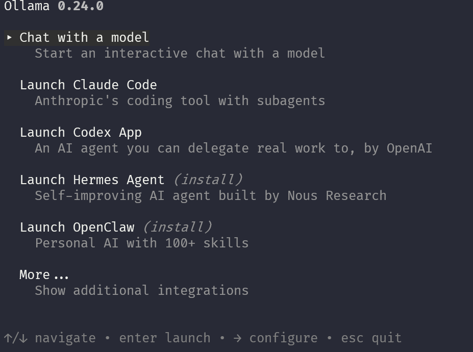
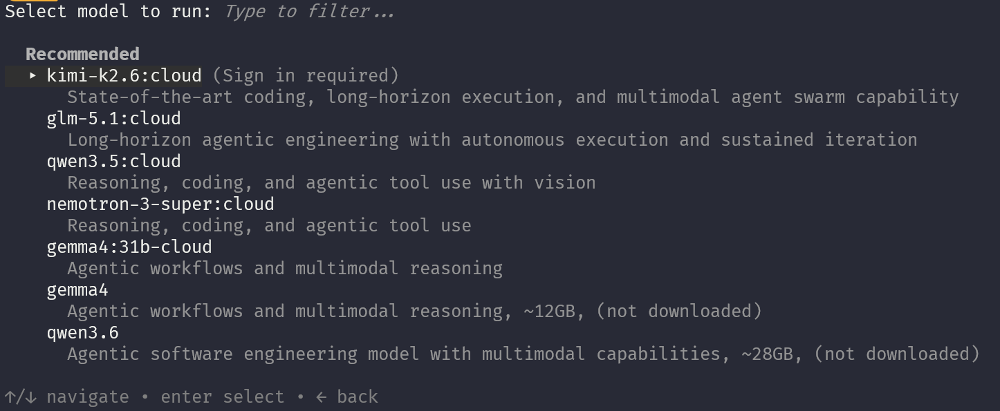
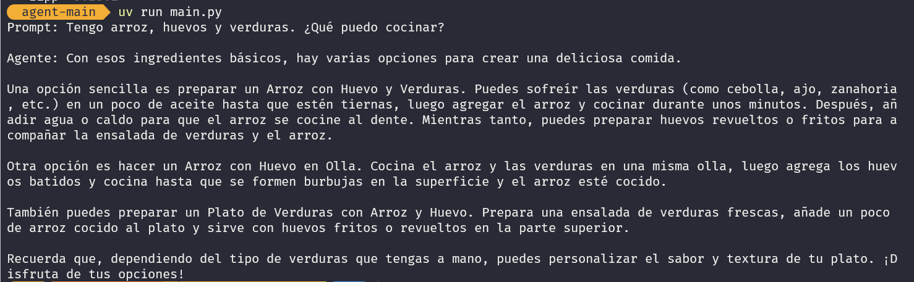
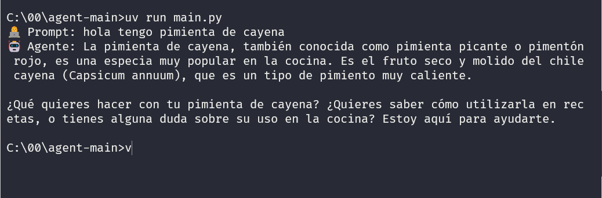

Windows
Descargá el instalador, ejecutalo y elegí la instalación recomendada. Si aparece la opción para agregar Python al PATH, dejala activada.
Workshop paso a paso
Construcción progresiva de un asistente que sugiere platos según ingredientes, tiempo disponible, preferencias y restricciones alimentarias.
Antes de empezar
La idea no es aprender todo Python desde cero: vamos a usarlo como vehículo para entender agentes, prompts, herramientas y memoria.
Setup
Abrí una terminal y ejecutá el comando según tu sistema operativo.
Si responde con una versión de Python 3.13 o superior, ya está listo. Si el comando no existe o muestra una versión anterior, instalá Python y volvé a abrir la terminal.
Setup
Descargá el instalador, ejecutalo y elegí la instalación recomendada. Si aparece la opción para agregar Python al PATH, dejala activada.
Descargá el instalador .pkg, seguí el asistente y luego verificá desde Terminal con python3.
Después de instalar, cerrá y abrí la terminal antes de volver a comprobar la versión.
Setup
uv prepara el entorno de Python del proyecto. Lee `pyproject.toml`, instala las dependencias y permite correr `main.py` con un comando.
Si aparece “uv: The term 'uv' is not recognized”, uv no está instalado o la terminal no tomó el PATH. Copiá el error completo y pegalo en un chatbot para pedir ayuda con el diagnóstico.
Setup
Ollama es una herramienta para ejecutar modelos de IA desde tu computadora. En esta práctica lo usamos como el motor local que responde las consultas del agente construido en Python.
Baja modelos y los guarda localmente para poder usarlos sin depender de una API externa.
Permite iniciar un chat con un modelo desde CMD, PowerShell o Terminal.
Expone un servidor local para que nuestro script Python pueda enviar prompts y recibir respuestas.
Setup

Setup
Al elegir Chat with a model, Ollama muestra modelos disponibles para ejecutar. Algunos aparecen como modelos online y requieren iniciar sesión.

Para esta práctica usamos llama3.1 porque es más razonable para equipos personales. Modelos más grandes pueden consumir mucha memoria y colgar la computadora.
Setup
Estos comandos preparan el modelo en Ollama y después ejecutan el proyecto Python.
Si `ollama`, `uv` o `python` no responden, copiá el error completo y pegalo en un chatbot. Muchas veces alcanza con instalar la herramienta, cerrar la terminal y abrir una nueva.
Concepto base
Genera texto a partir de una consigna. Puede sugerir ideas, pero no sabe consultar nuestro catálogo por sí solo.
Usa el modelo para decidir pasos: preguntar faltantes, llamar herramientas, leer resultados y responder con criterio.
Razonamiento operativo
Un agente de cocina mejora cuando no inventa recetas: consulta datos, filtra opciones y explica por qué una recomendación encaja.
Lee ingredientes, tiempo, equipamiento, dieta y nivel de dificultad.
Define si necesita buscar recetas, validar restricciones o pedir más datos.
Ejecuta herramientas y compone una recomendación clara, accionable y segura.
Arquitectura
El ciclo del agente se repite hasta que tiene suficiente información para recomendar un plato.

Código
La implementación real puede ser corta porque el framework encapsula buena parte del ciclo.
Stack
Lenguaje principal para scripts, herramientas y carga de datos.
Servidor local para ejecutar el modelo durante los primeros pasos.
SDK para definir agentes, system prompts y herramientas con @tool.
Inicio de práctica
Repositorio: github.com/lucianomartinezok/agent-main
Podés ejecutar todos estos pasos en tu computadora local: clonar el repo, instalar dependencias y correr el agente desde la terminal.
uv crea el entorno, instala dependencias y ejecuta el script usando la versión de Python configurada en el proyecto.
Recorrido del tutorial
La idea del taller es avanzar por ramas: cada una parte de la anterior y agrega una capacidad nueva al agente. Empezá por el 1 y seguí en orden.
| Branch | Concepto | Diapo |
|---|---|---|
main |
El agente más básico: modelo + prompt | 17 |
feature/01b-primer-agente |
Agente interactivo: aceptá prompts del usuario | 19 |
feature/02-system-prompt |
Rol y alcance del agente con system prompt | 22 |
feature/03-herramientas |
Primera herramienta (@tool) para consultar datos |
25 |
feature/03b-herramientas-callback |
Visualizar lo que hace el agente con callback | 25 |
feature/04-varias-tools |
Múltiples herramientas y decisión del modelo | 27 |
feature/05-memoria |
Sesiones para recordar preferencias entre ejecuciones | 29 |
feature/06-loop |
Loop interactivo para conversar con el agente | 31 |
feature/07-mejoras |
Organización del proyecto Python | 33 |
feature/08-modelos |
Cambio a otro modelo o proveedor | 34 |
Este recorrido está documentado en el README como plan del taller. La fila de `03b` queda agrupada con el paso 3 en esta edición de la presentación.
Paso 1
Primera conexión entre el modelo local y la clase Agent.
Paso 1

Primer objetivo: confirmar que `uv run main.py` ejecuta el agente y que Ollama responde con llama3.1.
Paso 1b
El script deja de usar una pregunta fija y empieza a recibir consultas del usuario. Después de cambiar de branch, volvés a correr el programa para ver este cambio en acción.
Paso 1b

Acá escribís la consulta dentro del programa, justo cuando aparece el prompt. Si la tipeás antes, PowerShell la interpreta como comando.
Paso 1b
La primera versión puede contestar cualquier tema. Este punto muestra por qué necesitamos alcance y guardrails.
Paso 2
El agente recibe instrucciones de rol, alcance y criterios de respuesta.
Paso 2
Las instrucciones reducen respuestas fuera de tema y sostienen el objetivo del asistente.
Paso 3
El agente necesita recetas estructuradas para responder con información verificable.
Paso 3
La herramienta permite que el agente consulte recetas en vez de inventarlas.
Paso 3
El modelo redacta la respuesta, pero la selección sale de datos consultables.
Paso 4
El agente dispone de más de una función y el modelo decide cuál conviene usar.
Paso 4
La selección de herramienta depende de la intención de la consulta, no de una regla fija.
Paso 5
Se agrega persistencia para recordar preferencias entre interacciones.
Paso 5
La memoria evita repetir preferencias en cada mensaje y mejora la continuidad de la conversación.
Paso 6
El agente queda disponible para una conversación continua desde la terminal.
Paso 6
El valor aparece cuando la conversación acumula contexto y el agente adapta la recomendación.
Paso 7
Paso 8
La misma lógica del agente puede ejecutarse con otro proveedor cuando el proyecto lo requiera.
Paso 8
La arquitectura se mantiene: cambia el motor de inferencia, no el diseño del agente.
Cierre
Modelo local, agente, herramientas, guardrails, datos, memoria, loop interactivo y cambio de proveedor.
Un agente capaz de recomendar comidas con contexto, restricciones y evidencia consultada.